| 日付 | 2024年4月27日（土） - 2024年4月29日（月） | ||||
|---|---|---|---|---|---|
| 山域 | 越後 | ||||
| メンバー | 家族（妻、長男・10歳） | ||||
| 山行形態 | 子連れ2泊3日キャンプ | ||||
| アクセス | 車 | ||||
| ルート (Map1) |
|
2日目
本日は粟ヶ岳登山だ。6時起床、準備をして7時に登山口に移動する。
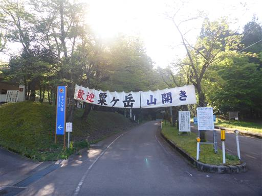
山開きは明日のようだ。
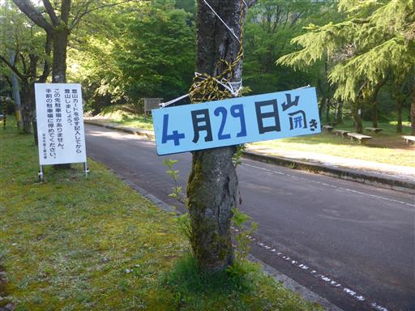
車道を歩いて登山口を目指す。
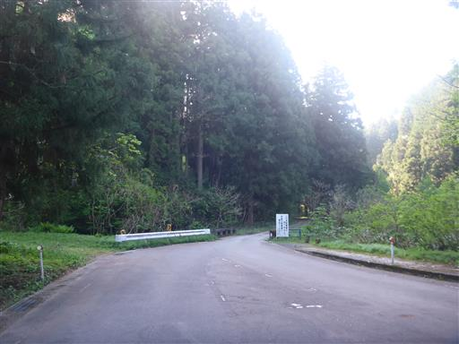
第二貯水池の堤防を渡る。
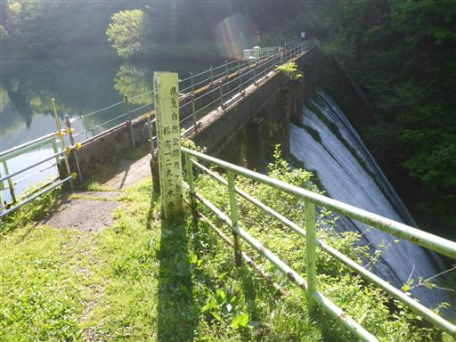
上から水の流れを見下ろす。なかなかの高度感だ。
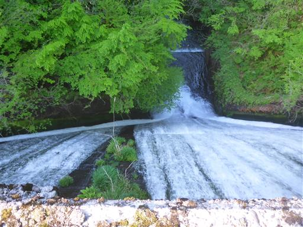
反対側の湖面はさざ波一つなく、新緑の景色を映している。

登山口に到着。
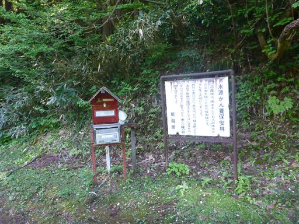
湖岸沿いの道を歩いていく。
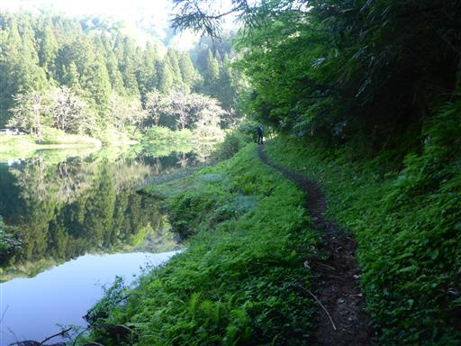
すぐに本格的な登山道になる。
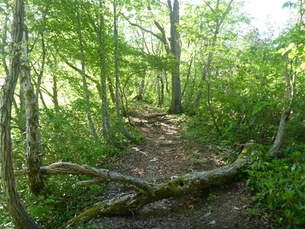
あちらこちらにイワカガミの花が咲いている。
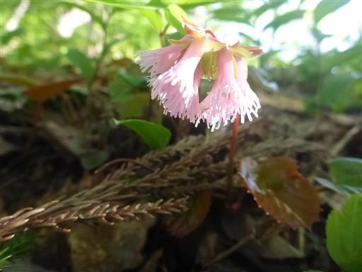
朝日を浴びて新緑が輝いている。
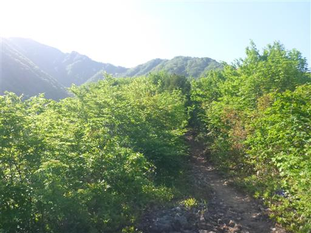
樹林帯の中の道。
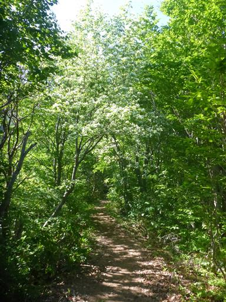
しばらく登ると展望が広がる。右奥のピークが目指す粟ヶ岳だ。
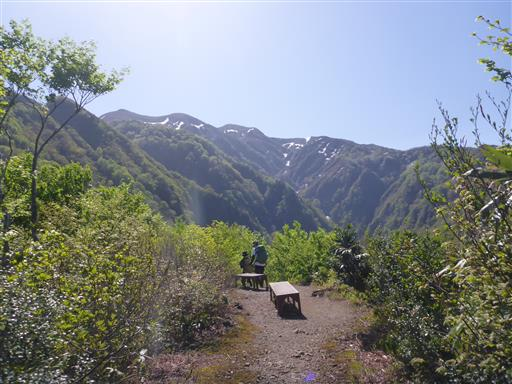
こちらは守門岳。まだ真白だ。
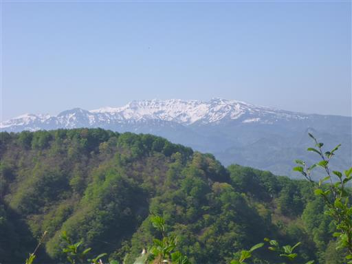
五合目を過ぎるとイワウチワがあちらこちらで見られるようになる。
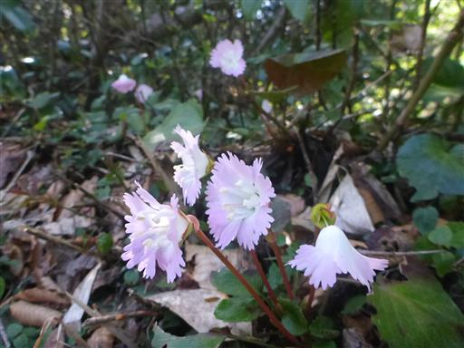
少し登山道が険しくなる。
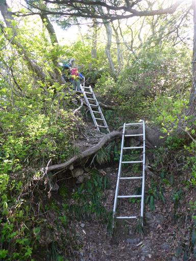
カタクリの花。一箇所に群生している。
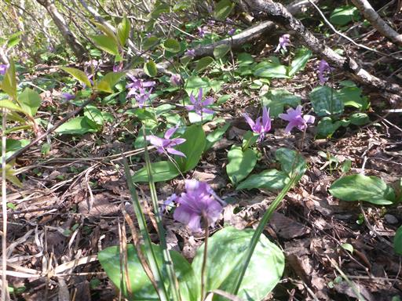
小さな岩場を超える。
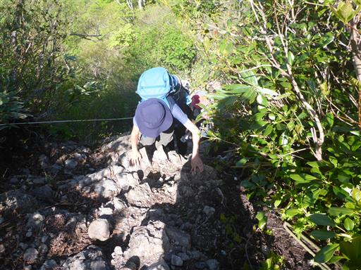
越後平野の大展望が広がる。真ん中に見えるのは明日登る予定の弥彦山。
霞んでいるのでその向こうの日本海は見えない。
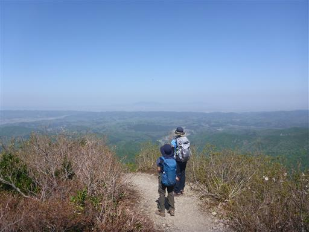
美しい新緑の尾根道。
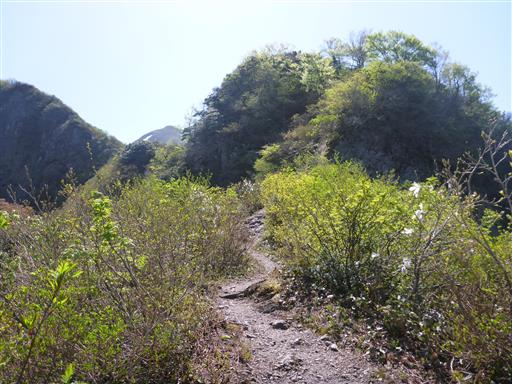
標高を上げるとあちらこちらでタムシバの花が見られるようになる。
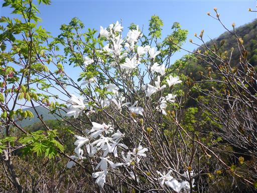
再び岩場。
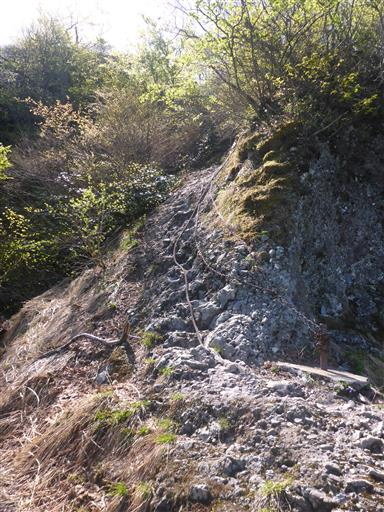
岩が彫られてステップができているので難易度は低い。
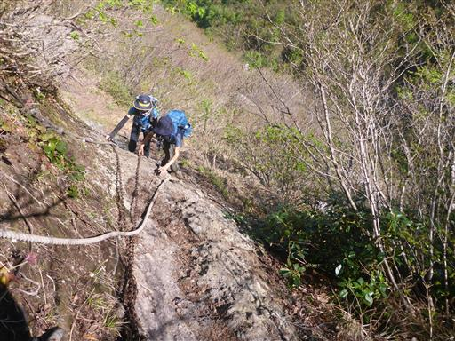
粟ヶ岳の大展望。だいぶ近づいてきた。
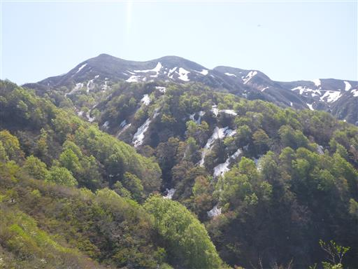
ところどころにツバキの花が咲いている。
こんな北国の山でツバキの花が咲くとは知らなかった。
調べてみたらどうやらユキツバキのようだ。
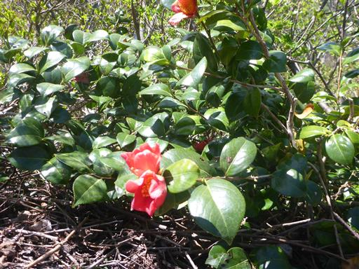
水場まで歩いて4分の標識。
冷たい水が流れてそうだが、遠いのでパス。
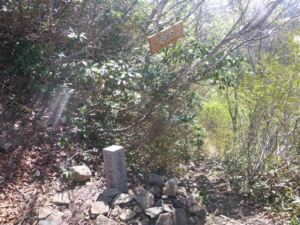
ついに斜面に残雪が現れる。
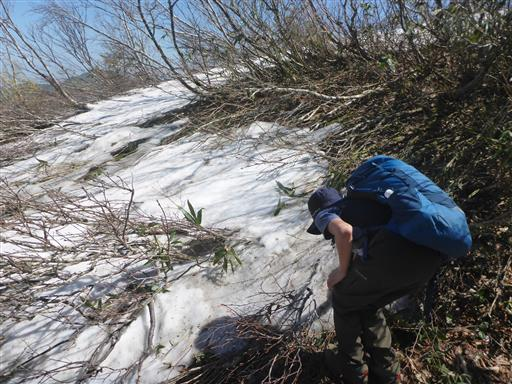
その後、登山道も雪に覆われる。
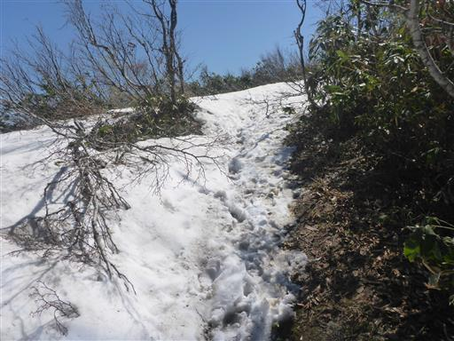
雪の上は少し涼しくて気持ちが良い。
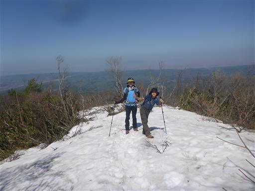
粟ヶ岳ヒュッテに到着。小さな避難小屋だ。
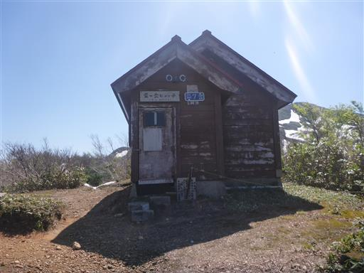
ここから先は残雪歩きだが、長くは続かない。
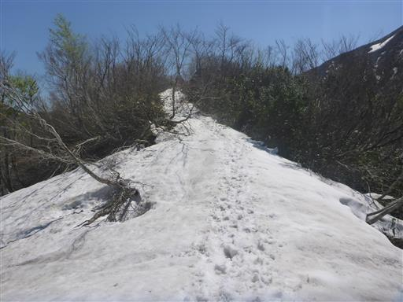
まだらに残る雪が美しい。
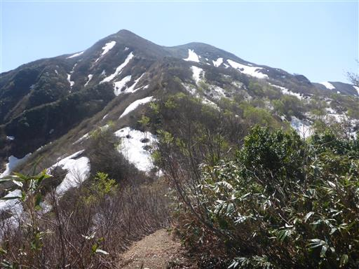
夏道と雪道の境界付近は少々歩きにくい。
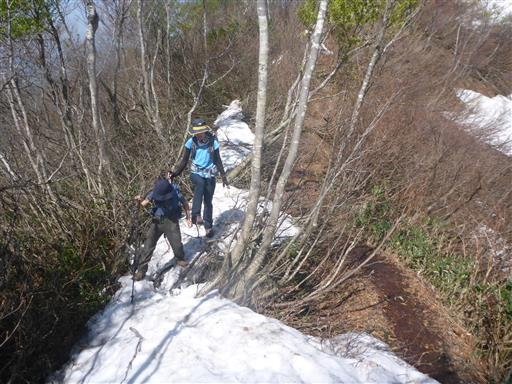
粟ヶ岳北峰に到着。
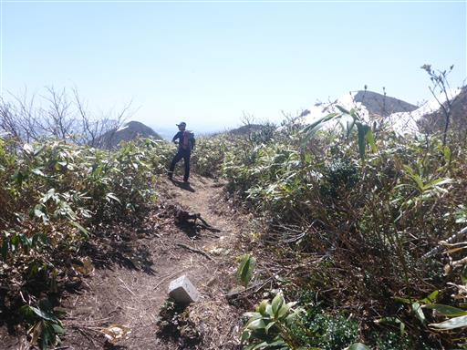
ここで初めて東側の展望が広がる。
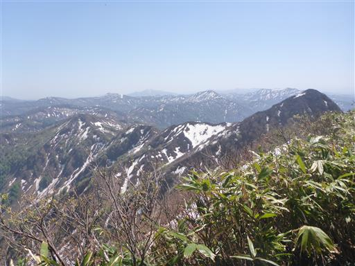
左に見えるピークが目指す粟ヶ岳山頂。もう目と鼻の先だ。
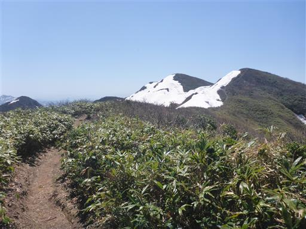
巨大な雪の塊。雪が解けて穴が開いている。
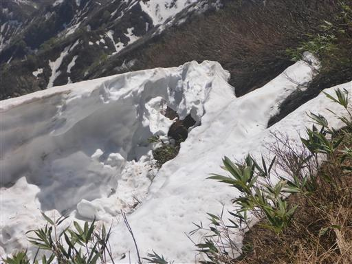
左は雪の白、右は緑、上は青空だ。
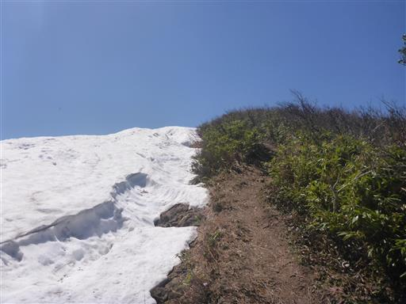
登山道は雪に覆われていないが、左側の残雪の上を歩いている人が見える。
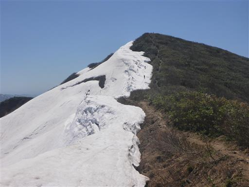
山頂直下でキクザキイチゲを発見。この花に出会うのは初めてだ。
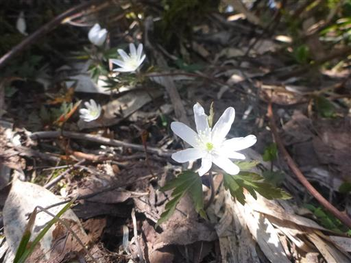
こちらは紫色。なんとも可憐な花だ。
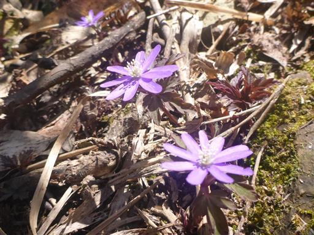
キスミレも咲いている。
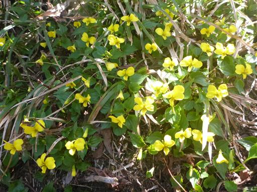
粟ヶ岳山頂に到着。標高1293m。
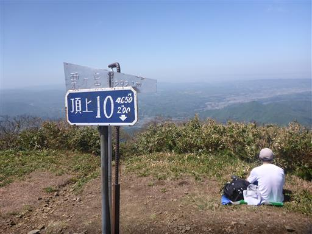
山頂は多くの登山者で賑わっている。
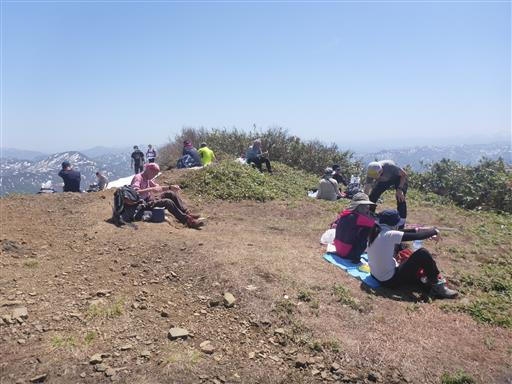
山頂からは360度の絶景が広がる。こちらは守門岳と浅草岳。
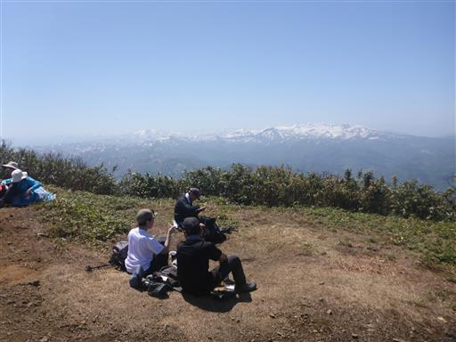
東側の山々。右奥の山は懐かしい御神楽岳だ。
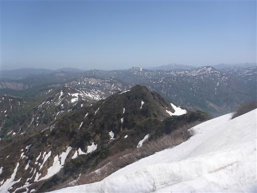
雪の塊が少し崩壊している。
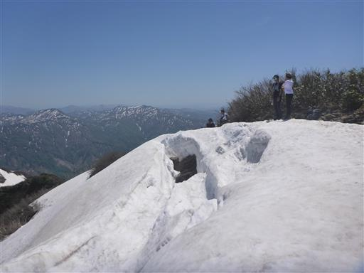
遠く飯豊山がぼんやりと見えている。

鐘があったので鳴らしてみる。
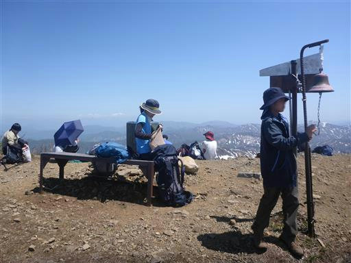
今回は往復登山だが、下山は雪の上を歩いてみることにする。
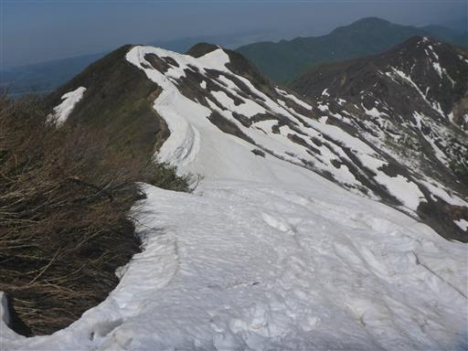
降りは雪の上の方が歩きやすい。
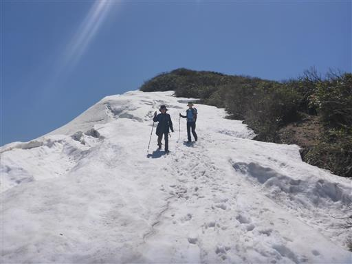
小さな雪庇ができている。
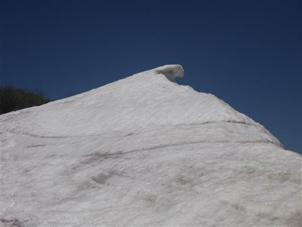
小さな水たまりに水芭蕉の花が咲いている。登りでは気が付かなかった。
正面に見えているのは權ノ神岳。この山を経由する登山ルートもある。
展望の良い尾根道。
崖の縁につけられた登山道。
そろそろ粟ヶ岳も見納め。
岩場を慎重に降る。
貯水池が見えてきた。
貯水池にはカエルがたくさん。
駐車場に戻ってくる。ここにはキャンプ場もあるのだが、こちらも比較的すいている。
粟ヶ岳近くの加茂美人の湯で汗を流す。
駐車場からは先ほど登った粟ヶ岳の雄姿が見える。
館内には大きなこいのぼりがぶら下がっている。
露天風呂や館内の休憩所からも粟ヶ岳を望むことができる。
経営は苦しいようだが、ぜひ継続してほしいものだ。
キャンプ場に戻ってくる。
釣り堀。魚がたくさん泳いでいる。
息子はキャンプ場内を流れる小川を石で水をせき止めて遊んでいる。
今日は時間に余裕があるので、遊具で遊んだりキャッチボールをしたりして、9時ごろ就寝。